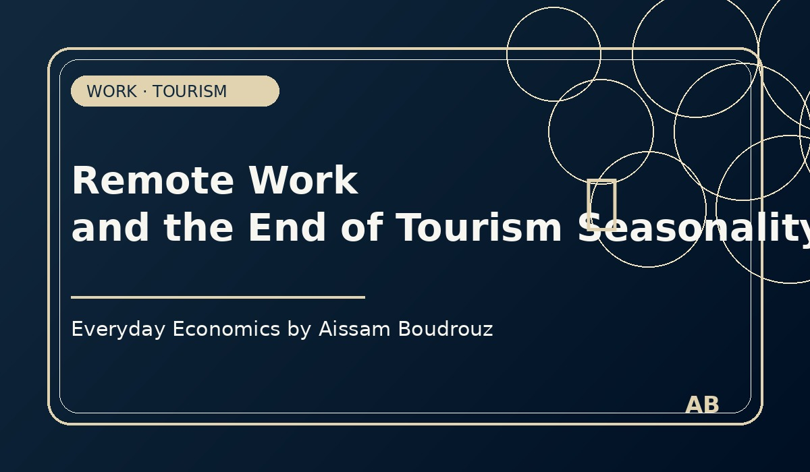

Remote Work and the End of Tourism Seasonality
For a long time, tourism has been shaped by one major constraint: time. People usually travel when they are on vacation, during school breaks, or when work allows them to disconnect for a few days.
But the rise of remote work is slowly changing this logic. Since the COVID-19 pandemic, many professions have moved from the office to more flexible work arrangements. In some sectors, the experience has shown that productivity can remain stable, or sometimes increase, when people work remotely.
This transformation raises an interesting economic question: could remote work reduce the seasonality of tourism?
I recently observed this during a visit to Essaouira, Morocco. It was November, a period that is usually quieter for tourism. Yet the city was still active, with many visitors spending time there. After speaking with some of them, I realized that many were not on holiday. They were simply working remotely from the city.
This means that for some workers, travel is no longer limited to vacation periods. If your work can be done from a laptop, the traditional constraint of waiting for annual leave becomes less important.
Economic interpretation
Economically, this could have important consequences. Tourism destinations that used to depend heavily on summer or holiday seasons may start receiving visitors throughout the year. Hotels, cafés, coworking spaces, restaurants, and local services could benefit from a more stable demand across seasons.
If remote work continues to grow over the next decades, we may see a gradual decline in the traditional seasonality of tourism. Tourism could become less concentrated in short peak periods and more evenly distributed throughout the year.
Of course, remote work does not eliminate all constraints. Income, family obligations, visas, infrastructure, internet quality, and housing costs still matter. But one of the biggest constraints — time — is becoming more flexible for part of the workforce.
What this tells us
The rise of remote work is not only a labor market story. It is also a story about cities, tourism, consumption, and local economic development. When people can work from anywhere, they also consume from anywhere.
In that sense, remote work may become one of the quiet forces reshaping the geography of tourism in the coming years.
← Back to Articles